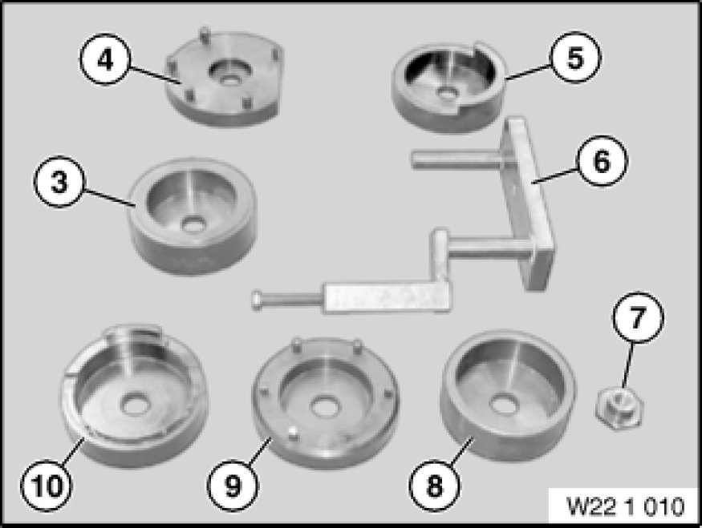

Operation CHARM
: Car repair manuals for everyone.
Home
>>
BMW
>>
2007
>>
X3 3.0si (E83) L6-3.0L (N52K)
>>
Repair and Diagnosis
>>
Engine, Cooling and Exhaust
>>
Engine
>>
Drive Belts, Mounts, Brackets and Accessories
>>
Engine Mount
>>
Tools and Equipment
Engine Mount: Tools and Equipment
22 1 010 Set of tools
Minimum set: Mechanical tools
